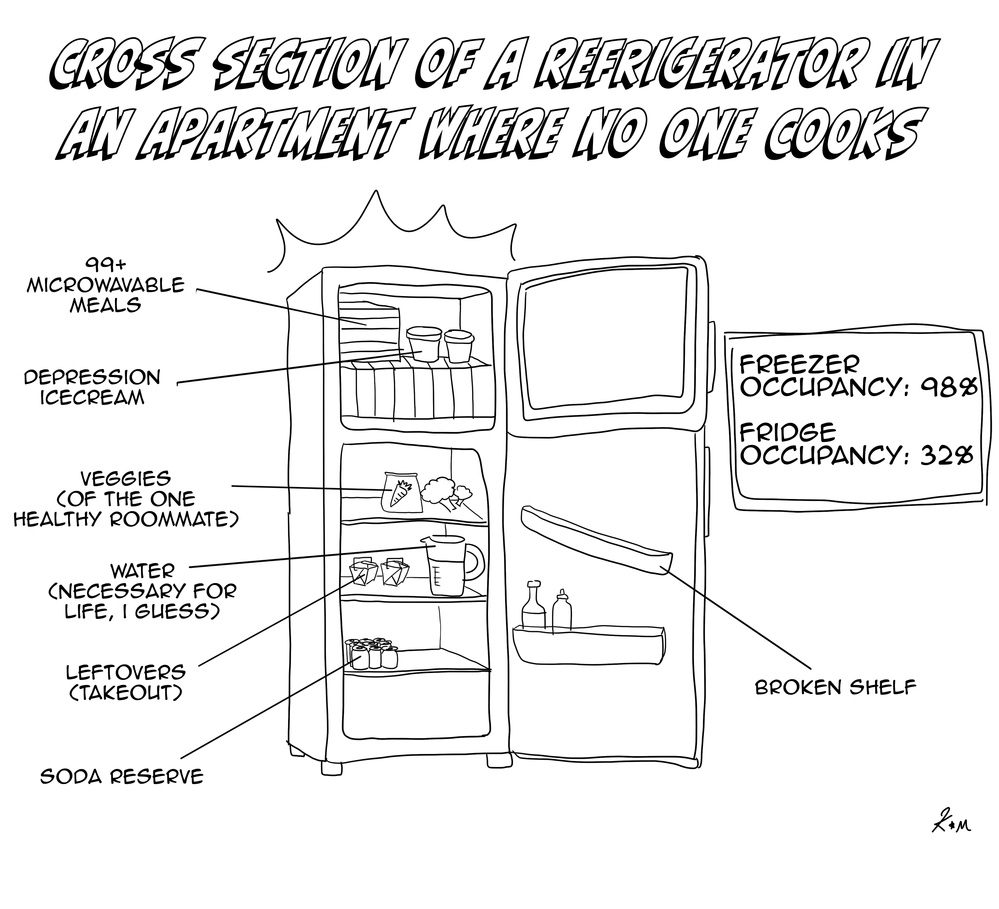

and they were roommates
a zine

Cross Section of a Refrigerator in an Apartment Where No One Cooks

artist / Kendall Moore
Kendall Moore is an English and Spanish double major and film minor here at the good ol’ UCLA. Although she doesn’t study art, she digs drawing funny little guys and collaging all sorts of junk. Funky vibes are totally her bread and butter. Actual bread and butter are also her bread and butter. She loves bread and butter. And no one has respect for her poor nerves.